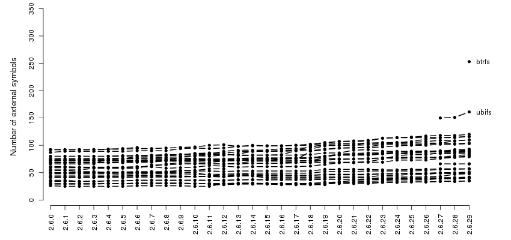
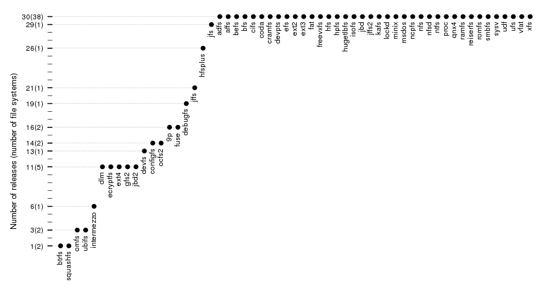
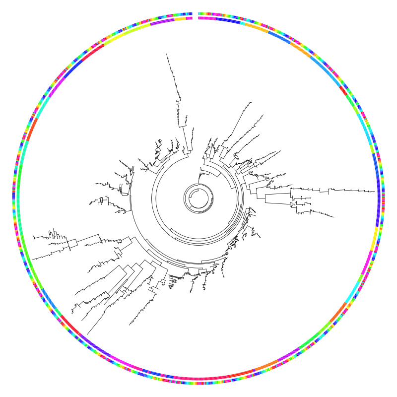

Linux Kernel 2.6.x
In this section we are going to look at the relations between 1377 file systems compiled from Linux Kernel 2.6.0–2.6.29. More details about how I compiled them can be found in Appendix A. Note that this time the final 2.6.29 version is used. This means that tux3 is missing.
Like the previous one, this section is also a sequence of commented figures.
Number of external symbols over time (part 1).
In order to avoid clutter, this graph is split in 6 parts. The
split was done based on how many external symbols file systems
gain over the whole span of their life. The first plot contains a
big group of 35 file systems that shows only very little
changes. Beside btrfs and ubifs, which stands
out due to their big number of external symbols, the other 33 are
the following: adfs, affs, befs, bfs, coda, configfs, cramfs,
debugfs, devfs, efs, freevxfs, hfs, hfsplus, hpfs, hugetlbfs,
intermezzo, isofs, jbd, jffs, lockd, minix, msdos, ncpfs, omfs,
qnx4, ramfs, romfs, smbfs, squashfs, sysv, udf, ufs, vfat.

Number of external symbols over time (part 2).
Only two notable things here: the race between ntfs
and jffs2 which start with a microscopic distance of only 2
symbols in 2.6.0, go apart to a distance of 43 symbols in 2.6.17
and end up with a distance of 24 in 2.6.29, and the sudden sink
of devpts in 2.6.4 which is followed by a a similar
increase in 2.6.13.
Number of external symbols over time (part 3).
Another close race is going on now between nfsd
and ext2. They also start at a distance of 2 symbols and
the distance keep growing ending up at 55 symbols in 2.6.29.
Number of external symbols over time (part 4).
Yet another interesting race is featuring this time proc
and reiserfs. proc starts with an advantage of 9
symbols but reiserfs is taking the lead in 2.6.7 and
surrenders in 2.6.24. By 2.6.29 the distance gets to 25 symbols.
Number of external symbols over time (part 5).
The only remarkable thing is the impressive jump of 62
symbols kafs, the Andrew File System, is making in
2.6.22. As we'll see a little later, this will earn him the second
place in the top of biggest jumps.
Number of external symbols over time (part 6).
In here we have 9p the absolute winner of the biggest
increase (74 symbols in 2.6.27) and also the biggest decrease (25
symbols in 2.6.23). The 54 symbols gained by osfs2 in
2.6.29 put him in the third place in the biggest increase
contest. Another winner is nfs which holds the absolute
record for the biggest difference between the minimum and maximum
number of external symbols.
Boxplots of the external symbols for each release.
In order to avoid cluttering, in this plot the lines that are shown
in the previous ones are omitted. The boxes indicate the interval
which contains 50% of the file systems for that particular
release. The thick horizontal line inside the box indicates the
median. We can see that the median goes up and so does the spread
of the two middle quartiles and the extremities.

Ranking based on longevity.
This is the first out of seven rankings and it shows in how many
releases each of the 65 file systems shows up. What is easily
noticeable is that most of the file systems, 38 of them, are
veterans and are present in all the 2.6.x releases. Note that
there are only four disk-based systems that are no
veterans: a very young one, btrfs which shows up only in one
release; a junior one, ext4 which accumulated so far 11 releases and
two old seniors, hfsplus and jfs which missed
the big group of veterans by only four and one releases, respectively.

Ranking based on the minimum and maximum number of symbols.
The following two graphs shows the file systems sorted by the
minimum and maximum number of symbols they had over their life in
2.6.x. The unbelievable number of external symbols of only one was
achieved by devpts in three consecutive releases (from
2.6.10 to 2.6.12). Also hard to believe is the number of 4
external symbols scored by 9p in 2.6.14 and 2.6.15. I
haven't actually tested these modules so they might be broken and/or
incomplete.
Ranking based on the range of the number of symbols.
This plot shows the ranking based on range, the difference between
the maximum and minimum number of symbols a file system had
reached in its lifetime. As we pointed before, the absolute winner
is nfs. Two of the file system at the other
end, btrfs and squashfs might not hold their
position for long considering that both only have one one presence
in 2.6.x.
Ranking based on the difference in number of symbols between first and last appearance.
This plot is very similar with the previous one. One interesting
thing is that freevxfs, a veteran which didn't skip any
2.6 release, ends up in 2.6.29 with two less symbols than in
2.6.0.
Rankings based on the biggest increase and decrease.
Beside the first places which were already mentioned what can be
said about this is that, despite the fact that most of the file
systems don't have big increases of the number of external symbols
from one release to another, they decrease much less than they
increase. The behavior of ubifs, which never decreases,
can be excused by the fact that he has only 3 presences in the 2.6.x.
Relations between the rankings.
This plot summarizes the previous seven ones. The gray lines are
used when the rank changed more than 10 positions.

Heatmap of the clustering using Hamming distance and Ward's method.
This is the first out of four animations that shows how the
heatmap of the Hamming distance evolves over time. To aid the
comparison, the file systems shown are only the one that are still
present in 2.6.29. Their position is keep fixed and is determined
by the clustering done on the distances from 2.6.29. The Hamming
distance is computed separately for each release. Red indicates
high similarity and yellow indicates the opposite. One notable
thing in all the four animations is that similarity is decreasing
over time.

Circular dendrogram of the clustering using Hamming distance and Ward's method.
This is the first out of four circular dendrograms that shows the
result of clustering using the Hamming distance over all the file
systems. The ticks that make up the inner ring encode file systems
while the outside ones encode the version number. A high
resolution image with text annotation is available upon click.
Circular dendrogram of the clustering using Canberra distance and Ward's method.
This is the first out of five circular dendrograms that shows the
result of clustering using the Canberra distance over all the file
systems. As we mentioned before, in our case, this metric is
equivalent with the number of different external symbols.


{kind=link}
{kind=link}
{kind=link}
{kind=link}
{kind=link}
{kind=link}
{kind=link}
Circular representation of the phylogenetic tree.
This last plot shows the phylgenetic tree constructed by Pars.

{kind=link}